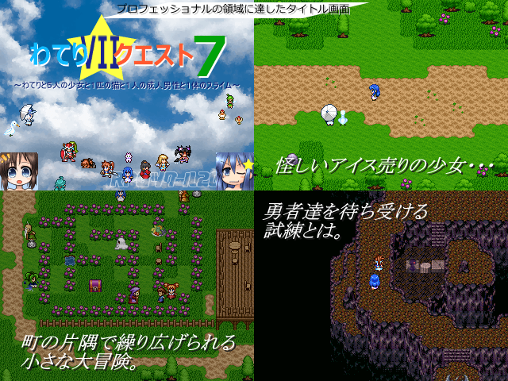

| No.38 わてり☆クエスト７ |
 |
|
| 作者：比較的悪いスライム | |
| ツクール：2000 | |
| ジャンル：わてり見るゲＲＰＧ | |
| 配信/投稿：わ/わ | |
| 作者コメント： ●プロローグ 勇者の戦いは終わらない。 今日も２分半ほどの厳しい修行をこなし、おやつをもぐもぐ１時間ほどかけてゆっくり食べ、あとは全部遊んで過ごしていた勇者わてり。 一方その頃、勇者リナックスは今日も激しい修行を６時間ほどみっちりする夢を見たあと、起き抜けにコロッケを食べながらブラックコーヒーに砂糖とミルクをたっぷり入れて飲み、あとは全部寝て過ごしていた。 ７人の仲間と遊ぶのです――世界が囁いている。 主に怠け、駄弁り、イチャコラし、そしてたまに思い出したように戦ったり、そのついでにちょっと切なくなったりするような物語がいま、始まる・・・。 ●ゲーム内容 およそ勢いというものとは無縁のわてわてな見るゲＲＰＧです。 今回は少しシリアスな内容を含みます。 ドラクエ要素とかないよ！ ●プレイ時間 ３時間～６時間くらい（標準的なスライムを基準とする） |
|
| 管理人コメント： もう7作目だっけと首を傾げたのはきっと私だけではないはず。関係なかった。 |
|
| ダウンロード(31.2MB) / 感想掲示板 | |
| 前の作品 / 次の作品 / TOPへ戻る | |